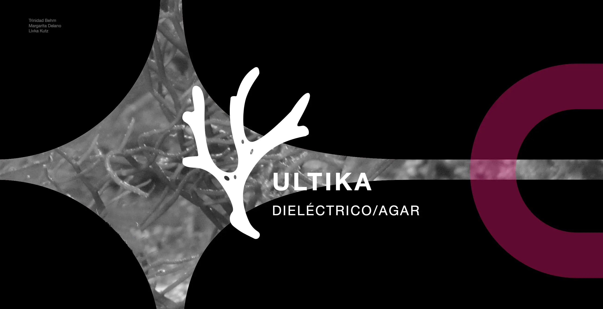
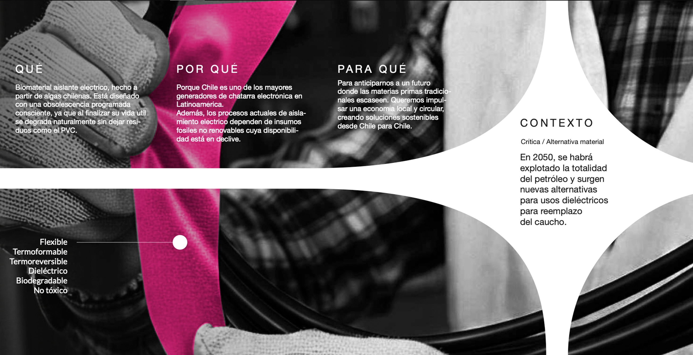
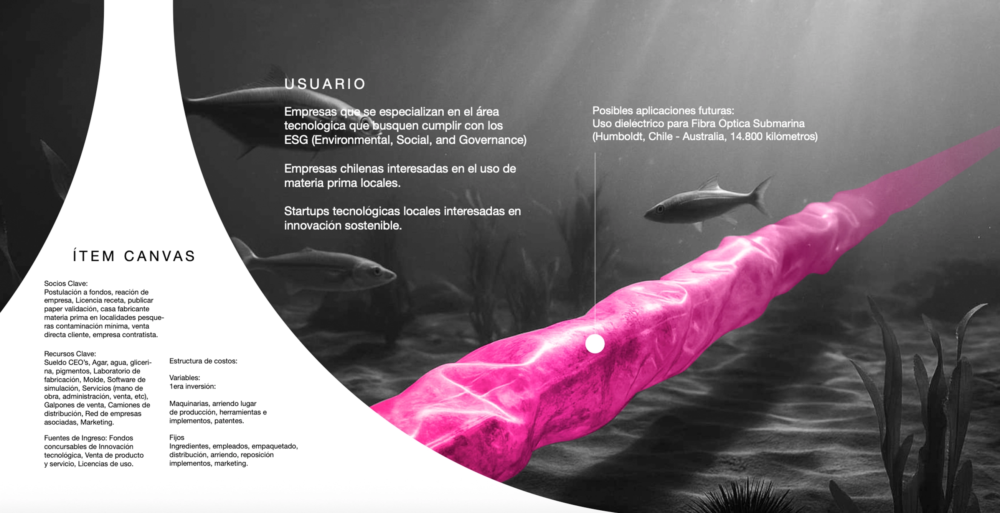

Ultika is an innovative biomaterial designed to function as an energy insulator. This project explores the possibilities of sustainable materials in technical applications, combining experimental design with practical functionality.


